油气化工 · OIL & GAS
→ 压焊标准/重型、齿型、热镀锌
→ 海上平台 316L
→ 踏步防滑前缘
→ 海上平台 316L
→ 踏步防滑前缘

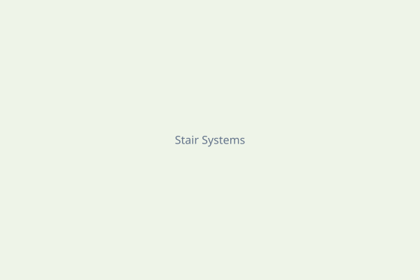
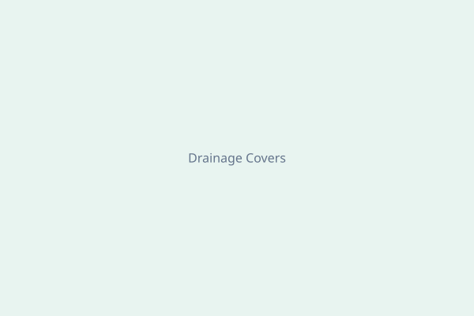
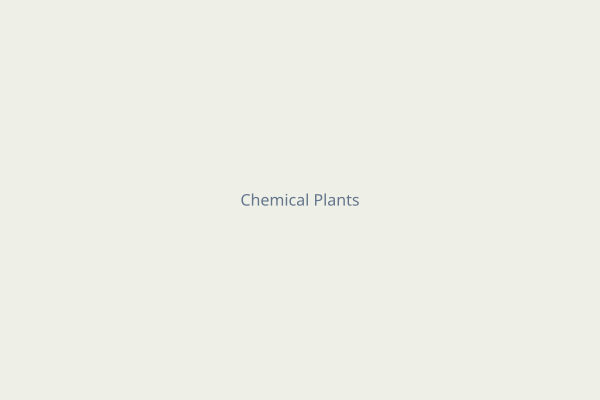


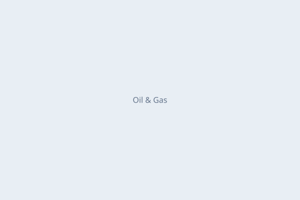
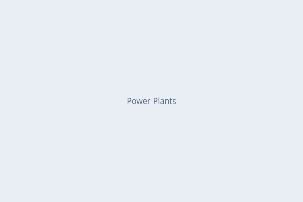
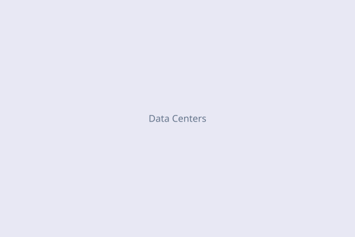
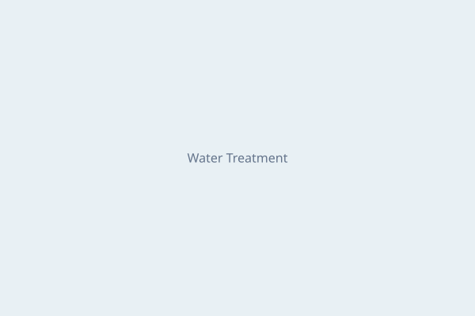
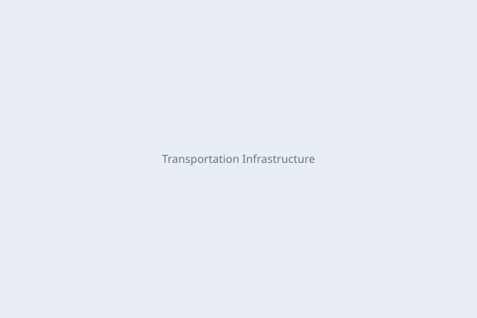
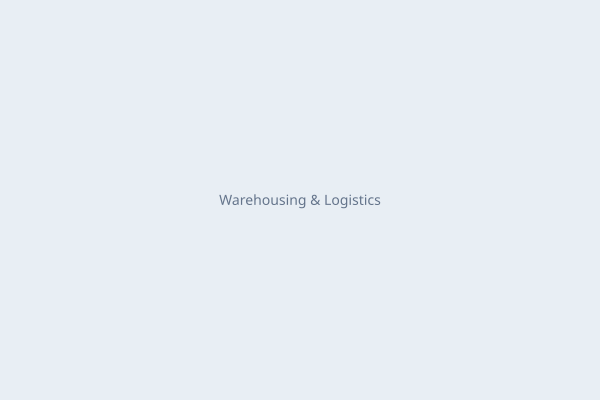
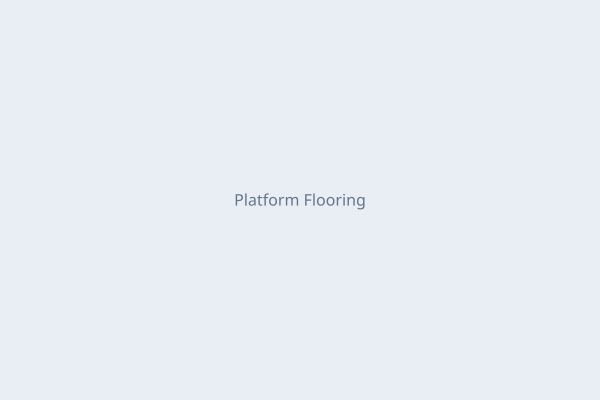
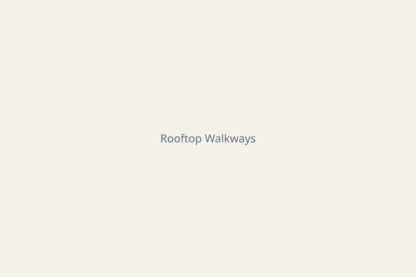

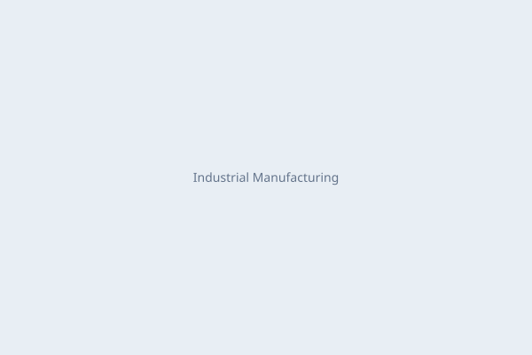
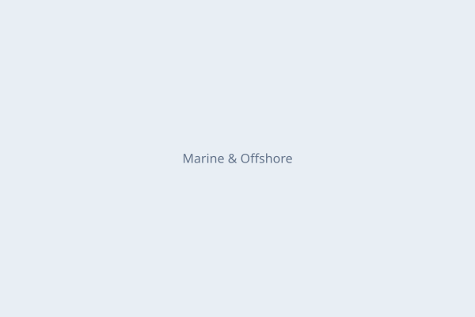
| 场景 / Application | 推荐代号 | 类型 | 表面 | 材质 |
|---|---|---|---|---|
| 一般平台走道 | W-30-100 | 压焊标准 | 光面/齿型 | 碳钢 |
| 高人流量 | W-20-50 | 密肋 | 齿型 | 碳钢 |
| 建筑可见部位 | P-33-33 | 压锁 | 光面 | 不锈钢/铝 |
| 叉车 / 车道 | HD-30-100 | 重型压焊 | 齿型 | 碳钢 |
| 楼梯 | T4 / T6 | 踏步+前缘 | 齿型 | 碳钢 |
| 道路边沟 | GT 系列 | 沟盖板 | 光面 | 镀锌钢 |
| 强腐蚀 | FRP | 模塑/拉挤 | 砂面 | 玻璃钢 |
| 离岸 / 滨海 | W-30-100 | 压焊 | 齿型 | 316L |